{{ sceneTitleDisplay }}
{{ progressLabel }}
INSTÄLLNINGAR
Musik & ambiens{{ musicVolPct }}%
Ljudeffekter{{ sfxVolPct }}%
TextlägeVisa text direkt — ingen skrivmaskin
Hög kontrastStarkare text och ramar
TextstorlekDialoger och statusfält
ÅTERSTÄLL ÄVENTYRET?
Allt framsteg, alla samtal och all packning försvinner. Detta går inte att ångra.
{{ e.name }}
{{ e.art }}
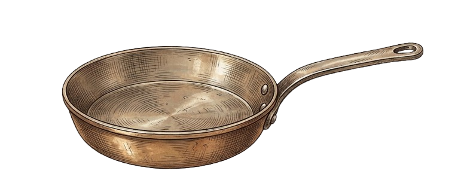
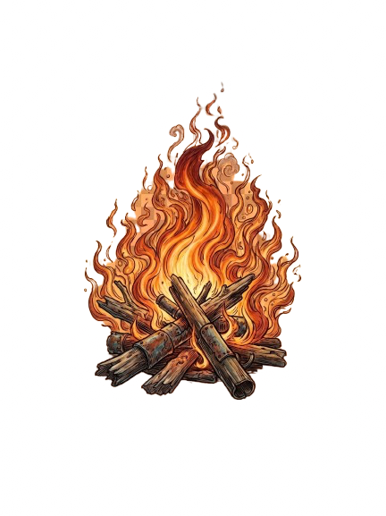
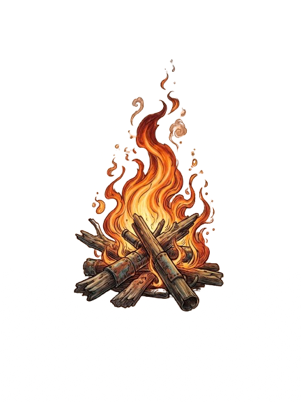
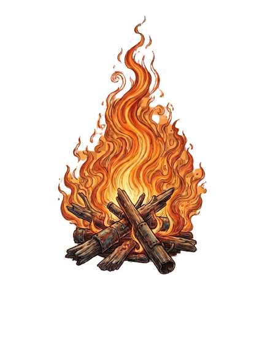
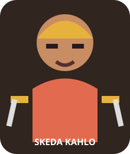
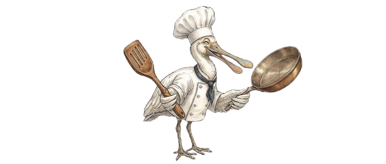
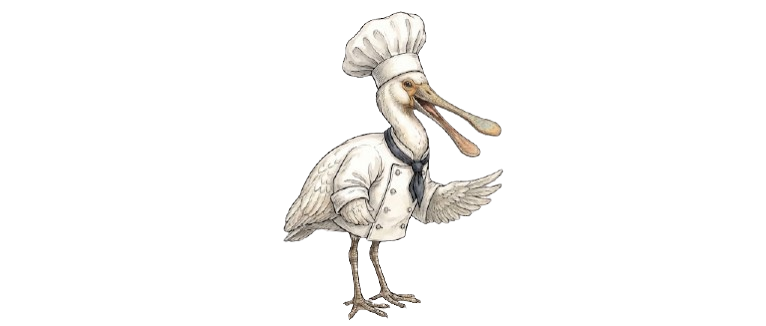
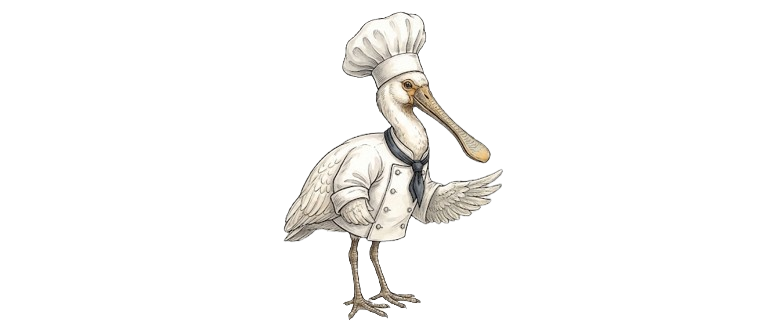
SKEDA KAHLO
GLÖDIS • PRISMA
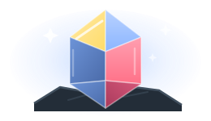
DOLPHAN LUNDGREN
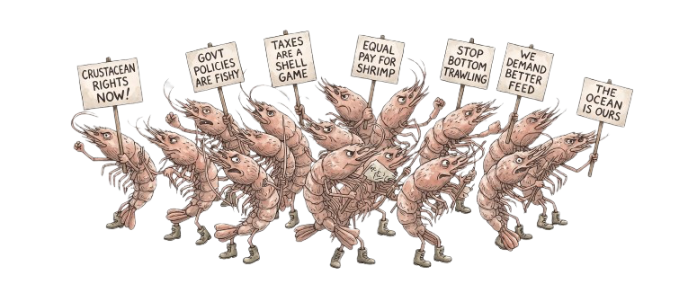
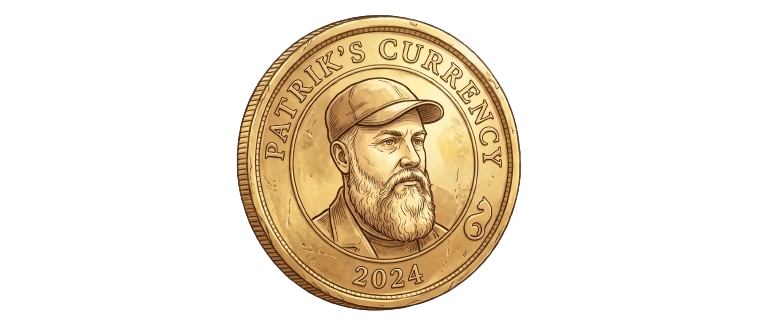
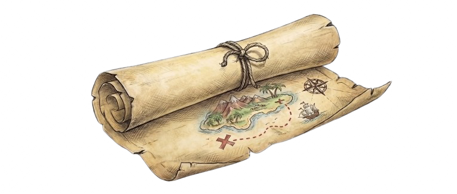
z
z
Z
{{ dialogSpeaker }}
{{ dialogText }}▍
PACKNING
DRA TILL SCENEN
{{ it.art }}
{{ it.name }}
TOM
SKRUBBA BORT SJÖGRÄSET
Gnugga med tandborsten tills krabban syns — {{ scrubPct }}%
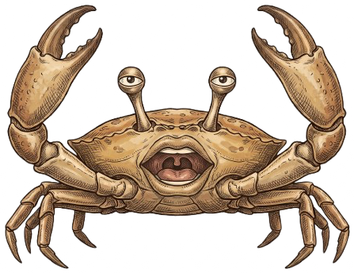
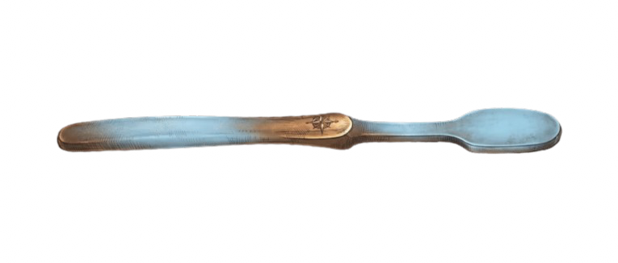
KÄNSLIG-
HET
HET
Krabban: "{{ scrubFeedbackMsg }}"
{{ guideTitle }}
MÅL
{{ guideGoal }}
STYRNING
{{ guideControls }}
MEKANIK
{{ guideMechanics }}
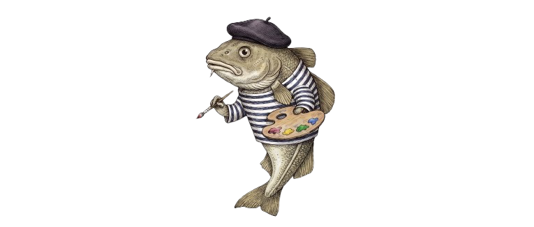
TORSKENS MÅLARSKOLA
Måla: {{ paintPrompt }} ({{ paintProgress }}/3)
{{ paintVerdict }}
STRANDATELJÉN · {{ atelierProgress }}/3
{{ atelierTheme }}
{{ atelierBrief }}
Klicka ett fynd för att lägga till det · dra på dockan för att flytta · piltangenter finjusterar · [ ] vinklar · + − storlek · PageUp/PageDown lager · Ctrl+Z ångrar · Esc stänger
{{ atelierSelected }}
{{ atelierMsg }}
EKOLODET · VRAK {{ sonarProgress }}/3
{{ sonarTarget }}
Ett lod ger avstånd i rutor — aldrig riktning. Där ringarna möts ligger vraket.
Lod fällda: {{ sonarPingCount }} · rent sjömanskap på {{ sonarBudget }}
{{ sonarMsg }}
BOMBANFALL ÖVER VIKEN
Piltangenter styr, MELLANSLAG släpper — Träffar: {{ gullGameHits }}/{{ gullGameWinHits }} · Bomber kvar: {{ gullGameBombs }}
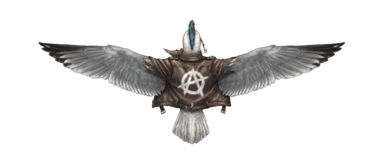
{{ gullGameMsg }}
SKEDA KAHLOS SOPPKÖK
🍲
Skeda visar receptet — upprepa det i rätt ordning. Runda {{ skedaGameRoundNum }}/3 • Steg {{ skedaGameStep }}/{{ skedaSequenceLen }}.
{{ skedaGameMsg }}
GLÖDIS STJÄRNPRISMA
Vrid kristallen i 3D så att färgerna matchar målet. Runda {{ glodisGameRoundNum }}/3.
{{ glodisTargetMsg }}{{ glodisCurrentMsg }}
{{ glodisGameMsg }}
DOLPHANS STORRÄDDNING
Piltangenter siktar, MELLANSLAG kastar — Träffar: {{ dolphanGameHits }}/{{ dolphanGameWinHits }} · Bojar kvar: {{ dolphanGameThrows }}
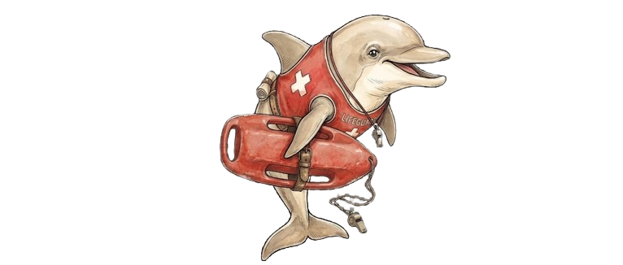
{{ dolphanGameMsg }}
SÄLENS FOTOSESSION
Sikta med mus eller piltangenter tills glaset lyser grönt. Klicka eller tryck mellanslag för att knäppa — Bilder: {{ sealGameShots }}/3 · Film kvar: {{ sealGameFilm }}
Uppdrag {{ sealGameChallengeNumber }}/3: {{ sealGameChallengePrompt }}
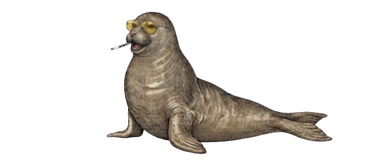
↔
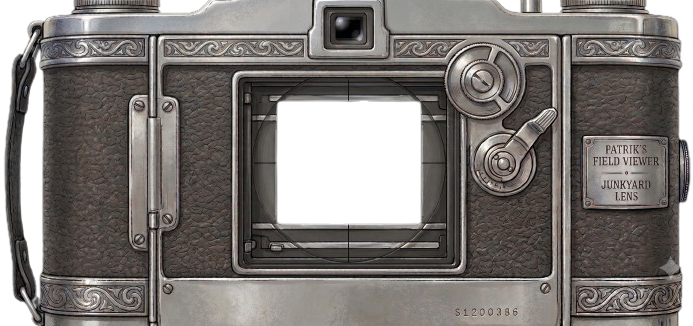
{{ sealGameA11yStatus }}
{{ sealGameMsg }}
LORD BAR-ONS FÄLTKLINIK • FALL 03–04
TENTAKELTRIAGE
Fas {{ octoGamePhaseDisplay }}/4 — {{ octoGameMsg }}
{{ octoGameA11yStatus }}
{{ octoReactionText }}
ANATOMISK ÖVERSIKT
AKTIV PROCEDUR / 0{{ octoGamePhaseDisplay }}
Vilka tentakler behöver vård?
Inspektera numreringen. Fel val skadar inte patienten.
Rikta skenorna längs tentaklerna
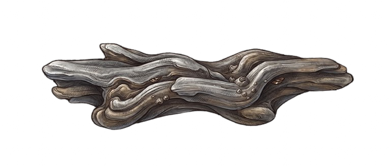
{{ sc.statusText }}
Pilar: ← → för skena 3, ↑ ↓ för skena 4.
Linda fiskelinan runt skenan
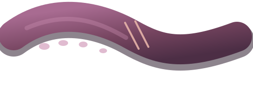
{{ ac.label }}
{{ octoRopeStatus }}
Håll nere på START. Jaga de blinkande ringarna i ordning — linan måste gå över och under skenan utan att du släpper.
Snurra bandaget — tre snabba, jämna varv
{{ octoBandageStatus }}
Håll musknappen och cirkla i den gröna banan. För nära eller för långt bort tappar bandaget spänningen.
PORTFÖLJENS KOMBINATIONSLÅS
Klicka på låset för att pröva koden — Försök kvar: {{ badgerGameAttemptsLeft }}
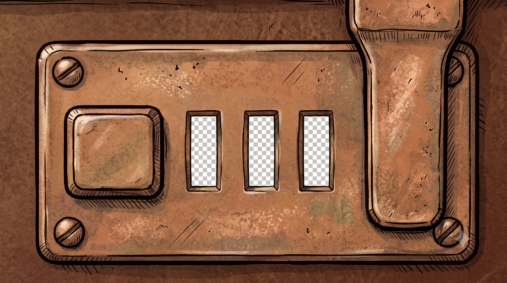
{{ d.value }}
{{ d.feedback }}
{{ badgerGameMsg }}
VALLGRAVSRÄKAN
En ensam portvakt vakar i murgraven. Klicka Starta samtal och svara med röst: tre rätt i rad öppnar vägen; en ung svensk klimatstridare kan också fälla bron direkt. Fel svar kostar inget.
{{ shrimpGameA11yStatus }}
Gåta {{ shrimpGameRiddleNumber }}/{{ shrimpGameTotal }}
{{ shrimpGameVoiceState }}

{{ shrimpAvatarStateLabel }}
{{ shrimpAvatarTranscript }}
{{ shrimpGamePrompt }}
Ledtråd: {{ shrimpGameHint }}
{{ msg.label }}
{{ msg.text }}▍
{{ shrimpGameMsg }}
BÄÄRNTS SKUGGTEATER
Klicka en skulptur för att välja den. Dra eller piltangenter vrider X/Y. Rulla runt Z med scrollhjulet, Q och E, eller Shift + dra. Runda {{ sheepGameRound }}/{{ sheepGameTotalRounds }}
{{ sheepGameA11yStatus }}
Mål — forma en enda silhuett: {{ sheepGameTargetName }}
{{ sheepGameMsg }}
{{ infoName }}
{{ infoDesc }}
KLICKA FÖR ATT STÄNGA
{{ m.text }}
{{ chatThinking }}...
{{ invGhostText }}